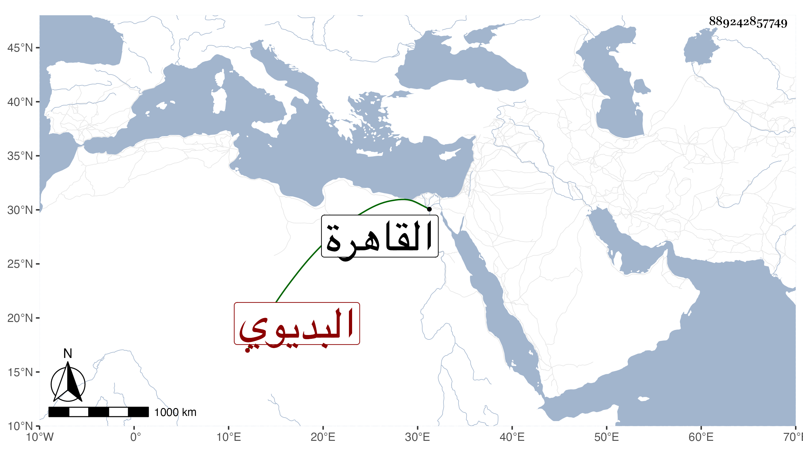

0902Sakhawi.DawLamic.ITO20230111-ara1.EIS1600.889242857749
Biography ID: 889242857749
460
محمد البديوي السيلكوني القيراطي ويعرف بحمام ، أصله تروجي ثم سكندري سكن القاهرة ممن أخذ فن النغمة والضرب عن الأستاذ ابن خجا عبد القادر الرومي العواد الآخذ عن أبيه عبد القادر وتميز في ذلك وما يشبهه وراج عند غير واحد من المباشرين كابن كاتب المناخات وأبناء الناس كابن تمر باي ونالته دنيا طائلة ومع ذلك فهو فقير لإذهابها أولا فأولا ، وقد تخرج به جماعة كإبراهيم ابن قطلوبك وأحمد جريبات وهما في الأحياء ومحمد الدويك وانفرد كل منهم بشيء فالأول أرأسهم والثاني أحفظهم والثالث أقدرهم على التصنيف وربما يتفقده الملك كل قليل بل رتب له كسوة وتوسعة في رمضان وطلبه للقبة الدوادارية غير مرة ولولا شهامته وعزة نفسه بحيث يثني على الرؤساء الماضين ويعيب على الباقين لكان ربما يزاد وقد مسه من شاهين الغزالي لتحامقه عليه بعض المكروه حيث أمر من صفعه وبالغ بما كان سببا لضعف بصره بل عمي ولذا طرح الناس وأقام منفردا بخلوة بمدرسة الزيادية على بركة الفهادي ، هذا مع اقتداره على الملق ولكنه لا يرى أحدا يحاكي من خالطه سيما مع إعجابه بنفسه وبلغني أنه زائد الوسواس كثير التردد في النية والطهارة شديد الحرص على الصلوات جماعة ومنفردا والاجتهاد في قضاء ما فاته بل توسع حتى قضى مدة حمله في بطن أمه ، وعمر حتى قارب التسعين وهو فريد في فنه .
